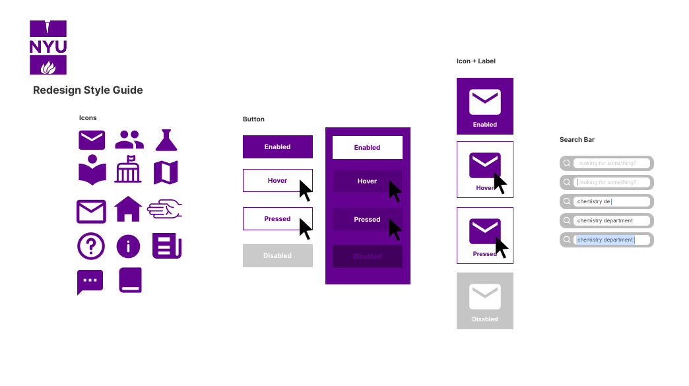

redesign preview
you can check out my redesign at this link.

websites are hard to use, and they're even harder to make.
nyu.edu needed a redesign, so I made one.
nyu's current site has a great aesthetic gesture.
a grid of mixed-size purple boxes forms the body of the page, showing the user news, information, and social links.

ISO/IEC 9126-1 definition of usability:
the capability of the software product to be understood, learned, used and attractive to the user, when used under specified conditions.
there are some usability issues with the current interface...
WebAIM Wave showed the site had no errors, except for a single contrast error. However, it did find 10 redundant links, a broken same page link, and a skipped heading level, which it marked as warnings.
I tested the new site's design with 4 people, and asked each of them to do 2 tasks:
I found that with the new design, users found the undergrad admissions button more quickly (presumably because of its location and associated icon). users also moved their cursors quickly to the news section during the second task, as they knew all of the news they would find on the home page would be in that column.
I created some lo-fi prototypes to get the general layout down...
...then created a style guide...
...and finally some hi-fi prototypes.